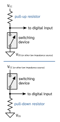
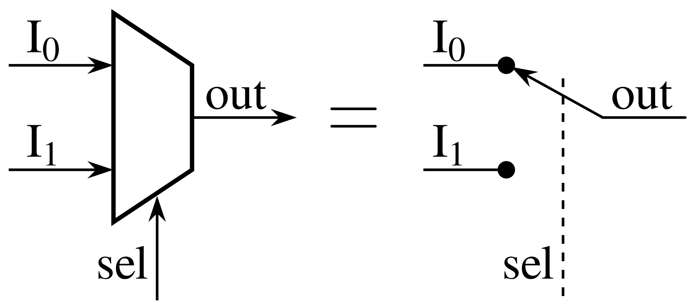
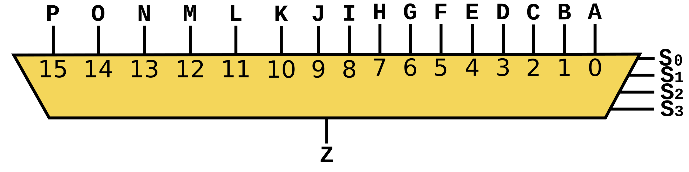

1. SE 423: Introduction to MechatronicsLecture 3: GPIOMarius Juston
Wednesday, January 28th, 2026
Lecture notes
This is the title slide for SE 423, Introduction to Mechatronics, Lecture 3: GPIO, presented by Marius Juston on Wednesday, January 28th, 2026. The University of Illinois Urbana-Champaign logo sits at the top, over a dark blue background of faint hand-drawn equations and diagrams.
Today's topic is GPIO, general-purpose input/output: how the Red Board's pins read switches and drive LEDs, and how the pin multiplexer assigns each pin its job. First, a few reminders.
2. Reminders
Office Hours:
- Monday: 4-6 PM, Neel
- Tuesday: 11-1 PM, Lakshmi
- Tuesday: 1-3 PM, Samuel
- Tuesday: 2-5 PM, Dan & Marius
Lab: Starting Lab 1 this week, will be using C so be sure to be prepared! ( don’t forget to turn in commented code)!
Homeworks (Next week):
- All check-offs for homework 1 are due February 3, 5PM
- Answers and code submissions for homework 1 are due February 4, 9AM
LabVIEW (Next week):
- All check-offs for LabVIEW 1 are due February 5, 5PM
Small easy Quiz at the end of this lecture, like Monday, due at 11AM.
Lecture notes
This slide lists the course reminders for the week, under the heading "Reminders."
Office hours: Monday 4 to 6 PM with Neel; Tuesday 11 AM to 1 PM with Lakshmi; Tuesday 1 to 3 PM with Samuel; and Tuesday 2 to 5 PM with Dan and Marius.
Lab: You start Lab 1 this week, and it uses C, so come prepared. Remember to turn in commented code. The slide links directly to the Lab 1 handout.
Homework, next week: all check-offs for homework 1 are due February 3 at 5 PM. Answers and code submissions for homework 1 are due February 4 at 9 AM. Note that the check-offs and the written and code submissions have different deadlines. The slide links to homework 1.
LabVIEW, next week: all check-offs for LabVIEW 1 are due February 5 at 5 PM. The slide links to LabVIEW 1.
There is a small, easy quiz at the end of this lecture, like the one on Monday, due at 11 AM.
Since Lab 1 is your first time writing C for the Red Board, today's GPIO material on digital inputs, outputs and the pin multiplexer feeds directly into it. Next, there is a chance to ask questions about the homework, lab, LabVIEW or quiz.
3. Questions? (1/2)
Homework, Lab, LabVIEW, quiz questions?
( I sent an update for the reason for the 2 counters question )
Lecture notes
This slide is a pause for questions. The large title reads "Questions?" with a short red line beneath it. The text below asks whether you have questions about the homework, the lab, LabVIEW, or the quiz, and notes that an update was sent explaining the reason behind the "2 counters" question.
Ask about anything from the reminders or from last lecture. Then the lecture moves into today's main topic: digital inputs and outputs, the GPIO interface between software and hardware.
4. Digital Inputs / Outputs (1/2)
Lecture notes
This section title slide reads "Digital Inputs / Outputs" in dark blue on the orange Illinois Grainger Engineering background, which has faint hand-drawn sketches of equations, a cube, molecules and a diagram.
With your questions on the homework, lab and quiz answered, you now start the main topic of Lecture 3: GPIO, or general-purpose input/output. Next you see what "digital" means. Then you see how the Red Board's pins drive outputs like LEDs and read inputs like switches. This is the first hardware you use in Lab 1.
5. Digital Inputs / Outputs (2/2)
What does it mean for something to be “digital”?
It is the control of your system / sensor using binary (0 or 1) signals.
Digital I/O is the lowest level electrical interface between software and hardware.
Almost every mechatronic system constrains at least one digital input / output.
Sensors often reduce complex physical phenomena to binary decisions ( limit reached / not reached, turned on or off )
Digital signals are inherently discrete
Digital I/O provides deterministic, low-latency interaction with the environment
Lecture notes
This slide is all text under the heading "Digital Inputs / Outputs." It opens with a bold question, "What does it mean for something to be digital?", and answers it with six short statements. Digital means controlling your system or sensor with binary signals, 0 or 1. Digital I/O is the lowest-level electrical interface between software and hardware. Almost every mechatronic system contains at least one digital input or output (the slide's word "constrains" means "contains"). Sensors often reduce complex physical phenomena to binary decisions, such as limit reached or not reached, or turned on or off. Digital signals are inherently discrete. Digital I/O provides deterministic, low-latency interaction with the environment.
The key idea is that a single pin carries exactly one bit of information. When your code writes a 1 or reads a 0, it is talking directly to a wire, with no protocol or conversion in between. A limit switch on a robot arm is a good example: the physical situation is complicated, but the software only needs to know one thing, whether the arm has reached the end of its travel.
"Discrete" means the signal can only be in one of two states, unlike an analog voltage that can take any value in a range. "Deterministic, low-latency" means that reading or setting a pin takes a predictable, very short time. That is why a GPIO, or general-purpose input/output pin, is the right tool for fast on/off events.
A quick check: is a potentiometer knob a digital input? No, its output is analog, and you would read it with the ADC later in the course.
Next, we look at what a 0 and a 1 actually mean electrically when a pin is configured as a digital output.
6. Digital Outputs (1/3)
A digital output drives a pin to a logic level:
- Logic 0 (LOW) → ≈0 V
- Logic 1 (HIGH) → ≈3.3 V / 5 V
Logic levels are represented by voltage ranges, not exact values
Internally controlled by a latch / register
Can source or sink limited current (GPIO should not be used to drive power)
Digital outputs are not power supplies and must not directly drive loads. The GPIO have a total maximum of current it can supply, shared throughout all the pins.
If you power too many devices using GPIO, you might run out of power!
Examples:
- Controlling LEDs
Lecture notes
This slide is text only, under the title "Digital Outputs." It says a digital output drives a pin to a logic level: logic 0, or LOW, is approximately 0 volts, and logic 1, or HIGH, is approximately 3.3 volts or 5 volts, depending on the device. Logic levels are voltage ranges, not exact values. The output is controlled internally by a latch or register, and it can source or sink only limited current. Digital outputs are not power supplies and must not directly drive loads, because the GPIO pins share one total current limit. The slide warns that if you power too many devices from GPIO, you might run out of power. The example given is controlling LEDs.
On the previous slides we defined "digital" as binary control. Now we look at the output side. When your code writes a 1 to the output latch, a transistor inside the chip connects the pin to the supply rail. When it writes a 0, a transistor connects the pin to ground. Sourcing means current flows out of the pin into your circuit. Sinking means current flows into the pin from your circuit. On the F28379D Red Board the I/O runs at 3.3 volts. The 5 volt level shows up on other microcontrollers, and the F28379D pins are not 5 volt tolerant.
A common mistake is wiring a motor, relay, or long LED string straight to a pin. A pin can light one LED through a current-limiting resistor. For anything heavier, the pin should switch a transistor or a driver chip, as the motor amplifier on your robot does.
Quick check: why does a HIGH that reads 3.1 volts still count as logic 1?
Next, we see how to configure a pin as an output in code.
7. Digital Outputs (2/3)
Digital output control consists of :
- Choosing the GPIO number
- Selecting the GPIO pin mux selection
- Setting direction = output
GPIO_SetupPinMux(34, GPIO_MUX_CPU1, 0);
GPIO_SetupPinOptions(34, GPIO_OUTPUT, GPIO_PUSHPULL);
You never write voltage, you write bits in registers
Lecture notes
This slide turns the idea of a digital output into the two lines of code you use on the Red Board. At the top is a three-step list: choose the GPIO number, select the GPIO pin mux selection, and set the direction to output. Below it are two function calls:
GPIO_SetupPinMux(34, GPIO_MUX_CPU1, 0);
GPIO_SetupPinOptions(34, GPIO_OUTPUT, GPIO_PUSHPULL);
Red arrows link each step to its argument. Two arrows from "choosing the GPIO number" point to the 34 in both calls. An arrow from the mux step points to the final 0 in GPIO_SetupPinMux. An arrow from "direction = output" points to GPIO_OUTPUT. The slide ends with: "You never write voltage, you write bits in registers."
Here is what each argument does. GPIO34 is the board's red LED. GPIO_MUX_CPU1 gives control of the pin to CPU1, one of the two cores on the F28379D. The mux index 0 selects plain GPIO instead of a peripheral function such as PWM. GPIO_OUTPUT sets the direction bit. GPIO_PUSHPULL means the pin actively drives both HIGH and LOW; we return to this on the push-pull slides.
After setup, you change the pin by setting or clearing a bit in a data register, and the hardware produces about 3.3 V or 0 V.
A common mistake is skipping the mux call or using the wrong index. The pin then belongs to another peripheral, and your writes do nothing.
Next, the mux table shows where that index comes from for every pin.
8. Digital Outputs (3/3)
![Table: GPIO mux selection for the F28379D LaunchPad, listing for each pin (GPIO0 through GPIO34 and beyond) its ME461 default use, LaunchPad header pin, and peripheral functions by mux index. Index 0, 4, 8 or 12 selects plain GPIO. Indices 1 to 3 set GPyGMUX to 00b and GPyMUX to 01b, 10b or 11b; indices 5 to 7 use GPyGMUX 01b; index 15 uses 11b and 11b. For example, GPIO0 at index 1 is EPWM1A on pin 40/J4.10. GPIO22 is LED1 on pin 8/J1.8, GPIO31 is the board blue LED, and GPIO34 is the board red LED.](L3_files/a06650368c02.svg)
Lecture notes
This slide shows the table you use to choose the third argument of GPIO_SetupPinMux, which appeared in the code on the previous slide. Its title is "GPIO Mux Selection," and it comes from the F28379D LaunchPad documentation.
Each row is one pin. The first columns give the pin's default use on the ME461 Red Board, its LaunchPad header pin, and its GPIO number. The remaining columns list the peripheral the pin connects to at each mux index. Index 0 (also 4, 8 or 12) selects plain GPIO, with GPyMUX = 00b. Indices 1, 2 and 3 set GPyGMUX to 00b and GPyMUX to 01b, 10b or 11b. Indices 5, 6 and 7 use GPyGMUX = 01b, and index 15 uses 11b for both. For example, GPIO0 at index 1 is EPWM1A, on pin 40/J4.10. GPIO22 is LED1/PWM on pin 8/J1.8, GPIO31 is the board blue LED, and the highlighted row at the bottom is GPIO34, the board red LED. For GPIO34, index 1 is OUTXBAR1, index 2 is EM1CS2, and index 6 is SDAB.
The key idea is that each physical pin can be wired internally to several peripherals, and the mux index picks which one. To blink the red LED you want GPIO34 as a simple software-controlled output. That is why the earlier code calls GPIO_SetupPinMux(34, GPIO_MUX_CPU1, 0). If you later want GPIO22 driven by a PWM module instead, you look up its row and pick the index for EPWM12A, which is 5.
A common mistake is picking the right GPIO but the wrong mux index. The pin then belongs to another peripheral and your writes do nothing. Quick check: which index would make GPIO0 an ePWM output? Next, you see this LED control in action.
9. Controlling an LED
YouTube video: GPIO Led Control Animation (Marius Juston)
https://youtu.be/606DHE81HZ4?si=4FCUMsPSI-xp2QcO
Lecture notes
This slide plays a short animation, "GPIO LED Control," at https://youtu.be/606DHE81HZ4?si=4FCUMsPSI-xp2QcO. It shows the steps from the previous slides in hardware.
The circuit, left to right: a box labeled GPIO feeds an inverter (a triangle with a small circle at its tip) powered from 3.3 V. The inverter's output connects to the cathode of an LED. The LED's anode connects through a 1 kilohm resistor up to 3.3 V. Current flows from 3.3 V through the resistor and LED into the inverter, so the LED lights when the inverter output is LOW, which is when your GPIO bit is HIGH.
Next, you reverse the direction and read a pin as an input.
10. Digital Inputs (1/2)
Digital input samples external voltage
Compared against logic thresholds:
- LOW
- HIGH
Examples:
- Buttons
- Switches
- Some types of encoders
Problem with floating inputs, if input is not driven:
- Voltage is undefined
- Susceptible to noise
- Input may randomly read 0 or 1
More on this with ADC
Lecture notes
This slide switches from outputs to inputs. It is text only, with four ideas: a digital input samples an external voltage; that voltage is compared against logic thresholds for LOW and HIGH; examples of digital inputs are buttons, switches and some types of encoders; and floating inputs are a problem. A closing line says there is more on this with the ADC.
In the LED video you just watched, the microcontroller drove a pin to set a voltage. Now the direction reverses: the pin only listens. The input hardware looks at the voltage on the pin and decides whether it counts as LOW (logic 0) or HIGH (logic 1). On the Red Board's 3.3 V logic, a voltage near ground reads 0 and a voltage near 3.3 V reads 1. Between the two thresholds is a region where the result is not guaranteed. The pin does not report the voltage itself, only one bit. Measuring the actual voltage is the job of the analog-to-digital converter (ADC) later in the course.
Buttons and switches are the classic examples, since they are either open or closed. Some encoders, the sensors that measure wheel rotation on the robot, also produce square-wave pulses that read as digital signals.
The key warning is about floating inputs. If nothing actively drives the pin, for example a button that is open and connected to nothing else, the voltage is undefined. Nearby wires and your hand can couple noise onto the pin, and it may randomly read 0 or 1. A common lab mistake is a button that "works sometimes" for exactly this reason.
So how do you give an open switch a defined level? That is the pull-up resistor on the next slide.
11. Pull-Up / Pull-Down Resistors
A pull-up resistor:
- Connects input to Vcc
- Defines default logic HIGH
When switch is:
- Open: input → HIGH
- Closed: input short circuits to GND → LOW
A pull-down resistor ( not used in our application ):
- Connects input to GND
- Defines default logic LOW
When switch is:
- Open: input → LOW
- Closed: input short circuits to GND → HIGH
This is all internal on the Red Board, makes it cleaner!
You don’t need to understand this, just put it in code!

https://en.wikipedia.org/wiki/Pull-up_resistor
Lecture notes
This slide answers the floating-input problem from the last slide: how do you give an input a defined voltage when nothing is driving it? The answer is a pull-up or pull-down resistor.
On the right are two circuits from Wikipedia (https://en.wikipedia.org/wiki/Pull-up_resistor). In the top one, the pull-up, a resistor runs from Vcc down to a node that feeds the digital input, and a switching device such as a push button connects that node to Vss, which is ground. When the switch is open, no current flows through the resistor, so there is no voltage drop and the input sits at Vcc: logic HIGH. When the switch closes, the node is connected straight to ground, so the input reads LOW. The resistor limits the current, so closing the switch does not short Vcc directly to ground. Notice the logic is inverted: pressed means 0.
The bottom circuit is the pull-down, which we do not use in this course. The switch sits between Vcc and the input node, and the resistor goes from the node to ground. Switch open, the input reads LOW. Switch closed, the input is connected to Vcc and reads HIGH. The slide's wording says "short circuits to GND" for this case, but as the diagram shows, the closed switch actually connects the input to Vcc.
On the Red Board the pull-up resistor is built into the chip. You do not wire one yourself; you enable it in software, as the next slide shows with GPIO_PULLUP. Quick check: with the pull-up enabled, what does the GPIO read when your button is pressed?
12. Digital Inputs (2/2)
Digital output control consists of :
- Choosing the GPIO number
- Selecting the GPIO pin mux selection
- Setting direction = input
- Enable pull-up resistor
GPIO_SetupPinMux(7, GPIO_MUX_CPU1, 0);
GPIO_SetupPinOptions(7, GPIO_INPUT, GPIO_PULLUP);
You read the binary input using:
if(GpioDataRegs.GPADAT.bit.GPIO7){
// Do stuff
}
Lecture notes
This slide turns the pull-up idea from the last slide into code. The heading says "Digital Inputs," and the list reads "Digital output control consists of," but these are the steps for configuring an input. There are four steps: choose the GPIO number, select the pin mux, set the direction to input, and enable the pull-up resistor. Below the list are two lines of C: GPIO_SetupPinMux(7, GPIO_MUX_CPU1, 0); and GPIO_SetupPinOptions(7, GPIO_INPUT, GPIO_PULLUP);. Red arrows link each step to its argument. Step 1 points to the 7 in both calls. Step 2 points to the mux arguments. Step 3 points to GPIO_INPUT, and step 4 points to GPIO_PULLUP.
The bottom of the slide shows how you read the pin: if(GpioDataRegs.GPADAT.bit.GPIO7){ // Do stuff }. A small blue box partly covers the register name, which is GPADAT.
Here is what each argument means. The 7 is the pin, GPIO7. GPIO_MUX_CPU1 gives control of the pin to CPU1, the core your code runs on. The final 0 selects mux option 0, which is plain GPIO; the pin mux comes later in this lecture. GPADAT is the data register for port A, which covers GPIO0 to GPIO31. Each bit in it reads 1 when the pin is HIGH and 0 when it is LOW.
A common mistake is to get the logic backwards. With the pull-up enabled and a button wired to ground, the pin reads 1 when the button is released and 0 when it is pressed. So this if statement runs while the button is NOT pressed. To act on a press, test for !GpioDataRegs.GPADAT.bit.GPIO7.
Next, we look at why outputs use a push-pull driver and not a pull-up.
13. Push-Pull - Output (1/2)
A push-pull output uses two transistors:
- A PMOS transistor pulls the pin up to 3.3 V
- An NMOS transistor pulls the pin down to GND
Only one is ON at a time.
When a pin is an output:
- You want deterministic voltage
- You want noise immunity
- You want defined transitions
A more detailed video here.
You don’t need to understand this, just put it in code!
( I wanted to create the animation for this, but if this text is still here, then it has not been done yet.)
NMOS
PMOS
Operational Amplifier
https://en.wikipedia.org/wiki/Push%E2%80%93pull_output
Lecture notes
This slide explains how a GPIO pin actually drives a voltage once you configure it as an output. On the previous slide you set pin 7 as an input with a pull-up; now we look at the output side.
The text says a push-pull output uses two transistors. A PMOS transistor pulls the pin up to 3.3 V, and an NMOS transistor pulls the pin down to GND. Only one is ON at a time. When a pin is an output, you want a deterministic voltage, noise immunity, and defined transitions. A link to a more detailed video is on the slide, and the slide reminds you that you don't need to understand this in depth, just put it in code. A small note says an animation is planned but not yet made.
The figure, from https://en.wikipedia.org/wiki/Push%E2%80%93pull_output, is a generic push-pull stage. The Input goes to the plus input of an operational amplifier. The op-amp output drives the joined bases of two complementary transistors. The upper one, labeled NMOS, connects to the positive supply. The lower one, labeled PMOS, connects to the negative supply. Their joined emitters form the Output, which drives a Load to ground and feeds back to the op-amp's minus input.
Here is how the circuit works with plus and minus 9 V supplies. If the input is high, the NPN turns on and the PNP is off, so current flows from +9 V through the load to ground. The NPN sources current, which is called push. If the input is low, the PNP turns on and the NPN is off, so current flows from ground through the load to -9 V. The PNP sinks current, which is called pull.
On the Red Board, the same idea uses CMOS transistors between 3.3 V and GND. The pin is always actively driven, never floating.
Next, we see why a pull-up resistor can't do this job for an output.
14. Push-Pull - Output (2/2)
A pull-up resistor is:
- Slow
- Incapable of pulling LOW
So, for outputs, pull-ups are electrically irrelevant and often harmful.
( I wanted to create the animation for this, but if this text is still here, then it has not been done yet.)
NMOS
PMOS
Operational Amplifier
https://en.wikipedia.org/wiki/Push%E2%80%93pull_output
Lecture notes
This slide continues the push-pull discussion by contrasting it with a pull-up resistor. The text says a pull-up resistor is slow and incapable of pulling LOW, so for outputs, pull-ups are electrically irrelevant and often harmful.
On the right is a push-pull output stage, taken from the Wikipedia article on push-pull outputs (link: https://en.wikipedia.org/wiki/Push%E2%80%93pull_output). The input goes to the plus input of an operational amplifier. The op-amp output drives the joined control terminals of two complementary transistors. The upper transistor, labeled NMOS, connects to the positive supply and pulls the output up. The lower one, labeled PMOS, connects to the negative supply and pulls it down. Their junction is the output, which drives a load to ground and feeds back to the op-amp's minus input. The drawing is a follower arrangement, which is why the N-type device sits on top. In the CMOS output inside the F28379D, the arrangement from the previous slide applies: PMOS pulls up to 3.3 V and NMOS pulls down to GND. A note under the figure says an animation was planned but has not been made yet.
Why is a pull-up slow? It is a weak resistor, about 20 to 50 kΩ, charging the pin and wire capacitance. The rise time follows the RC time constant, while a transistor switches the pin in nanoseconds. A resistor also cannot actively drive a pin low. If the output transistor holds the pin LOW with a pull-up still enabled, current flows continuously through the resistor. That is about 3.3 V / 20 kΩ ≈ 0.17 mA, which is wasted power.
A common mistake is copying the input setup from slide 12 onto an output. For outputs, you use GPIO_OUTPUT with GPIO_PUSHPULL instead of GPIO_PULLUP.
Next, you see why even well-driven outputs have current limits.
15. Digital Outputs – too many GPIO output
Why would we run out of power?
Each GPIO output has its own transistors and can safely source or sink only a limited current.
However, all GPIOs draw that current from shared internal power and ground networks inside the chip.
Even if each individual pin is within its limit, the sum of all GPIO currents can exceed what the silicon, bond wires, or package can safely carry.
This is why microcontrollers specify both per-pin and total GPIO current limits, and why GPIOs must never be used as power supplies.
Think of each GPIO as a faucet drawing water from the same pipe.
- Each faucet has a local limit (per-pin current)
- The pipe has a global flow limit (total GPIO current)
Opening too many faucets:
- Reduces pressure
- Stresses the pipe
- Causes failure elsewhere
Lecture notes
This slide is all text, no figures. Its title is "Digital Outputs, too many GPIO output," and it asks one question: why would we run out of power?
On the last slide you saw that each GPIO output is a push-pull stage, with one transistor pulling the pin up to 3.3 V and another pulling it down to ground. Those transistors are small, so each pin can safely source current (push it out of the pin) or sink current (pull it into the pin) only up to a limited amount. That is the per-pin limit.
The catch is that every GPIO draws its current from the same internal power and ground networks inside the chip. So even if every pin stays under its own limit, the sum of all GPIO currents can exceed what the silicon, the bond wires (the tiny wires connecting the die to the package pins), or the package itself can safely carry. This is why datasheets give both a per-pin current limit and a total GPIO current limit, and why the slide says, in bold, that GPIOs must never be used as power supplies.
The slide offers an analogy. Think of each GPIO as a faucet on the same water pipe. Each faucet has a local limit, the per-pin current, and the pipe has a global flow limit, the total GPIO current. Opening too many faucets reduces pressure, stresses the pipe, and causes failure somewhere else.
For the robot, this means you use GPIOs to signal, not to drive loads. Motors, servos and LED strips get their own supply and a driver or transistor. Next, we switch from outputs back to inputs and look at internal pull-up resistors.
16. Pull-Up / Pull-Down Resistors - Input
What an input pin is:
- Pin becomes high-impedance, sensitive to low current, allowing for high voltages
- Sensitive to noise
The internal pull-up:
- Weak resistor (~20-50 kΩ)
- Slightly biases pin to logic HIGH
- Can be overridden by external hardware (button to GND)
Without pull-up, just using floating-inputs, you would be sensitive to random noise, returning:
- Random bits
- Thus, unpredictable control behavior
https://en.wikipedia.org/wiki/Pull-up_resistor
Lecture notes
Slide 16 returns to pull-up and pull-down resistors, this time for inputs. On the previous slides you saw that a pull-up is slow and cannot pull a line LOW, so it adds nothing to a push-pull output. On an input, it is exactly what you need.
The left side has three groups of text. First, what an input pin is: the pin becomes high-impedance, meaning it draws almost no current and simply senses whatever voltage is applied to it. The cost is that it is sensitive to noise. Second, the internal pull-up: a weak resistor of about 20 to 50 kilohms that slightly biases the pin to logic HIGH and can be overridden by external hardware, such as a button to ground. Third, without a pull-up the input floats, so noise produces random bits and therefore unpredictable control behavior.
The right side shows two circuits from the Wikipedia pull-up resistor article. In the top circuit, a pull-up resistor runs from V_CC to a node that feeds the digital input, and a switching device connects that node to V_SS, or ground. With the switch open, the resistor holds the input HIGH. With the switch closed, the low-impedance switch wins and the input reads LOW. In the bottom circuit, the pull-down, the roles are mirrored: the switch connects V_CC to the input node, and a resistor ties that node to V_SS, so the default is LOW and a press reads HIGH.
A common mistake is forgetting that a button to ground with a pull-up is active-low. Pressed reads 0. Quick check: what does the pin read when the button is released? Also remember that the internal resistor only exists if the pin is configured that way, which leads into the pin multiplexer on the next slides.
17. Pin Mux (1/4)
Lecture notes
This is a section title slide reading "Pin Mux" in dark blue on the orange Illinois background, with faint hand-drawn math and chemistry sketches as decoration.
So far you have treated each pin as a simple GPIO, configured as an output that drives an LED or as an input with a pull-up resistor. But one physical pin can also serve PWM, SPI, UART and other peripherals. Next you see how the pin multiplexer chooses which function each pin performs, something you will configure in Lab 1.
18. Pin Mux (2/4)
The Red Board has only 80 pins but 160 GPIO!
We also need the pins to do multiple specialized things,
- GPIO (General Purpose Input-Output)
- PWM output (Pulse Width Modulation)
- SPI (Serial Peripheral Interface)
- I2C (Inter-Integrated Circuit)
- CAN (Controller Area Network)
- UART (Universal Asynchronous Receiver-Transmitter)
- ADC trigger, etc. (Analog-to-Digital Converter)
Whole list is in the pin mux list, you will be using this in Lab 1!
This sharing is managed by the pin multiplexer!
Pins and GPIOs are not for hardware wiring / optimality reasons.
Lecture notes
This slide motivates the pin multiplexer. It states that the Red Board has only 80 pins but 160 GPIO. It also says the pins must do several specialized jobs, listed as: GPIO, general purpose input-output; PWM output, pulse width modulation; SPI, serial peripheral interface; I2C, inter-integrated circuit; CAN, controller area network; UART, universal asynchronous receiver-transmitter; and ADC trigger and others, for the analog-to-digital converter. The slide says the whole list is in the pin mux list, which is linked on the slide, and that you will use it in Lab 1. The sharing is managed by the pin multiplexer. The last line says pins and GPIOs do not line up one-to-one, for hardware wiring and optimality reasons.
The key idea is that the chip has far more internal signals than physical pins to bring them out. There are 160 GPIO lines plus every PWM, SPI, I2C, CAN, UART and ADC signal, but only 80 header pins. So each physical pin is shared. Software chooses which one function is connected to that pin at any moment.
Because of the routing, the numbers do not match. Header pin 5 is not GPIO5. The board designers route signals to suit the board layout, so you always look up the mapping instead of guessing.
A common mistake in Lab 1 is to configure the correct GPIO in code but probe or wire the wrong header pin. Before you wire anything, find both the GPIO number and the physical pin in the pin mux list.
As a quick check, ask yourself: if a pin is set up as a PWM output, can it also blink an LED as a plain GPIO at the same time?
Next, we look at what a multiplexer actually is in hardware.
19. What is the Pin Multiplexer (PinMux)
This is a hardware switch that selects which peripheral controls a pin:


https://en.wikipedia.org/wiki/Multiplexer
Lecture notes
This slide answers the question raised on the last two: how can 80 physical pins serve 160 GPIO signals plus PWM, SPI, I2C, CAN, UART and ADC triggers? The answer is a multiplexer, a hardware switch that selects which peripheral controls a pin.
The top figure shows a two-input multiplexer. On the left is the standard symbol, a trapezoid with inputs I_0 and I_1, one output labeled out, and a select input labeled sel entering from the bottom. On the right is the equivalent picture: a single switch whose lever connects out to either I_0 or I_1, moved by sel through a dashed mechanical link. In the drawing it is connected to I_0. With two inputs, sel is one bit: 0 picks I_0 and 1 picks I_1.
The bottom figure is a 16-to-1 multiplexer. Sixteen inputs, labeled A through P and numbered 0 through 15, enter the top. Four select lines, S_0 through S_3, enter the right side. One output, Z, leaves the bottom. The 4-bit select value is a binary number from 0 to 15, and it connects exactly one input to Z. The general rule is that n select bits can choose among 2^n inputs, read as "two to the n," so 16 inputs need 4 bits because 2^4 = 16.
On the Red Board, the pin is the output. The candidate inputs are the CPU's GPIO data and the various peripherals, and the select bits are values you write into configuration registers. Remember that only one source drives a pin at a time. If you pick the wrong mux setting, your peripheral never reaches the pin.
Keep the 2^n rule in mind for the next slides, where each pin chooses among up to twelve peripherals plus GPIO.
20. Pin Mux (3/4)
Up to twelve independent peripheral signals are multiplexed on a single GPIO-enabled pin in addition to
the CPU-controlled I/O capability.
Each pin output can be controlled by either a peripheral or one of the
four CPU masters (CPU1, CPU1.CLA, CPU2, or CPU2.CLA). There are six I/O ports:
- Port A consists of GPIO0-GPIO31
- Port B consists of GPIO32-GPIO63
- Port C consists of GPIO64-GPIO95
- Port D consists of GPIO96-GPIO127
- Port E consists of GPIO128-GPIO159
- Port F consists of GPIO160-GPIO168
GpioDataRegs.GPBTOGGLE.bit.GPIO34 = 1;
Lecture notes
This slide gives the specifics of the F28379D's pin multiplexing. The text says each GPIO-enabled pin can carry up to twelve independent peripheral signals, plus the ordinary CPU-controlled input/output function. A pin's output can be driven either by a peripheral or by one of four CPU masters: CPU1, CPU1's Control Law Accelerator (CLA, a small coprocessor), CPU2, or CPU2's CLA.
The GPIOs are grouped into six I/O ports of up to 32 pins each:
Port A is GPIO0 to GPIO31.
Port B is GPIO32 to GPIO63.
Port C is GPIO64 to GPIO95.
Port D is GPIO96 to GPIO127.
Port E is GPIO128 to GPIO159.
Port F is GPIO160 to GPIO168.
The ports matter because each port has its own set of 32-bit registers.
At the bottom is one line of code: GpioDataRegs.GPBTOGGLE.bit.GPIO34 = 1; The letter B in GPBTOGGLE is highlighted with a box. That letter selects the port. GPIO34 falls between 32 and 63, so it lives in Port B, and you must use the GPB registers. Writing 1 to a TOGGLE bit flips the pin's output state. Writing 0 does nothing.
A common Lab 1 mistake is mismatching the port letter and the GPIO number, for example writing GPATOGGLE for GPIO34. Quick check: which port register would you use to toggle GPIO70? It is Port C, so GPCTOGGLE.
Last slide described the multiplexer as a selectable switch. Next, you see the logic behind one pin and work out how many select bits twelve inputs require.
21. Pin Mux (4/4)
![Block diagram of the logic behind one GPIO pin. Input path: the pin, with an optional pull-up (GPyPUD), passes through an input buffer, optional inversion (GPyINV) and qualification (sync, 3-sample, 6-sample or async). It then feeds the GPyDAT read registers, the Input XBAR and the peripherals. Output path: a mux selected by GPyGMUX:GPyMUX codes 00:00 through 11:xx picks GPIO data (from CPU1, CPU2 or CLA registers via GPyCSEL) or peripherals A through L, then drives the pin through open-drain logic (GPyODR).](L3_files/14956ca0b648.svg)
( I wanted to create the animation for this, but if this text is still here, then it has not been done yet.)
PinMux has 12 inputs, requires how many bits in the selector?
Lecture notes
This slide shows Figure 8-1 from the TMS320F28379D technical reference manual, "GPIO Logic for a Single Pin." The yellow-free text in the corner says an animation was planned; if that text is still there, the animation has not been made yet. If you would like to help build it, the instructor would love your help, because these animations take a lot of time to get working.
Trace the diagram from the pin, labeled GPIOx, on the left. On the input path, the signal can be pulled up (controlled by GPyPUD), optionally inverted (GPyINV), and then qualified: synchronized to SYSCLK, sampled 3 or 6 times, or passed asynchronously. The result feeds the GPyDAT read registers for all four CPU masters, the Input XBAR, and the peripherals. On the output path, a large multiplexer, circled in red, picks what drives the pin. A second small mux, selected by GPyCSEL, chooses whether CPU1, CPU1.CLA, CPU2 or CPU2.CLA supplies the GPIO data and direction. The open-drain logic (GPyODR) then drives the pin.
The red arrow asks: the PinMux has 12 inputs, so how many selector bits does it need? Three bits give only 2^3 = 8 choices, so you need 4 bits, which give 16. The hardware splits these 4 bits into two 2-bit fields. GPyGMUX, the group mux (the instructor's draft note calls it G), is the high pair. GPyMUX is the low pair.
The codes read GMUX:MUX. 00:00 is GPIO. 00:01 through 00:11 are peripherals A to C. 01:00 is GPIO again. 01:01 through 01:11 are peripherals D to F. 10:xx gives GPIO and peripherals G to I, and 11:xx gives GPIO and peripherals J to L. With two GMUX bits there are four groups, 00 to 11. Note that 00:00 and 01:00 both select GPIO, so not every one of the 16 codes is a distinct peripheral.
Next, you see how GPIO_SetupPinMux writes these GMUX, MUX and CSEL bit fields in code.
22. Pin Mux – Code ( Not the exact code for reduced spacing )
void GPIO_SetupPinMux(Uint16 gpioNumber, Uint16 cpu, Uint16 muxPosition)
{
volatile Uint32 *gpioBaseAddr; // volatile means that the variable may change from external sources (i.e. interrupts)
volatile Uint32 *mux, *gmux, *csel;
Uint16 pin32, pin16, pin8;
pin32 = gpioNumber % 32;
pin16 = gpioNumber % 16;
pin8 = gpioNumber % 8;
gpioBaseAddr = (Uint32 *)&GpioCtrlRegs + (gpioNumber/32)*GPY_CTRL_OFFSET;
mux = gpioBaseAddr + GPYMUX + pin32/16;
gmux = gpioBaseAddr + GPYGMUX + pin32/16;
csel = gpioBaseAddr + GPYCSEL + pin32/8;
EALLOW; // block that controls the physical multiplexer
// 0x3UL means 0b11 but in int32_t (i.e. 0b11 with 30 leading 0s)
*mux &= ~(0x3UL << (2*pin16));
*gmux &= ~(0x3UL << (2*pin16));
*gmux |= (Uint32)((muxPosition >> 2) & 0x3UL) << (2*pin16);
*mux |= (Uint32)(muxPosition & 0x3UL) << (2*pin16);
*csel &= ~(0x3L << (4*pin8));
*csel |= (Uint32)(cpu & 0x3L) << (4*pin8);
EDIS;
}
Lecture notes
This slide shows a simplified version of the C function GPIO_SetupPinMux, which configures one GPIO pin's multiplexer. It takes three arguments: gpioNumber, cpu (which master controls the pin), and muxPosition (which of the pin's signals to select). The title notes that the code is not exact; spacing is reduced to fit the slide.
This answers the question from the last slide. Twelve possible inputs need 4 selector bits, because 2^4 = 16 is at least 12. The function splits those 4 bits across two registers: the upper two bits, muxPosition >> 2, go into GMUX, and the lower two bits, muxPosition & 0x3, go into MUX.
First the code computes pin32 = gpioNumber % 32, the pin's position within its 32-pin port, plus pin16 and pin8. Then gpioNumber/32 selects the port (A, B, C and so on) and offsets the base address. Each 32-bit MUX register holds 16 pins at 2 bits each, so pin32/16 picks the first or second register, and 2*pin16 is the bit position. CSEL uses 4 bits per pin, 8 pins per register, so it uses pin32/8 and 4*pin8. The pointers are volatile, which tells the compiler the hardware value can change outside the program and must not be optimized away.
EALLOW and EDIS unlock and relock the protected control registers. Each field is cleared with &= ~(0x3 << shift), where 0x3UL is a 32-bit unsigned binary 11, and then set with |=.
Quick check: for GPIO34, the port is B, pin32 = 2, and the field is bits 4 and 5 of GPBMUX1. Next we look at common mistakes when calling this function.
23. Common PinMux mistake
GPIO_SetupPinMux(19, GPIO_MUX_CPU1, 0);
GPIO_SetupPinOptions(19, GPIO_OUTPUT, GPIO_PUSHPULL);
- Using the pin number instead of the GPIO number
- Using the wrong GPIO for the pin that you want
- Direction is not set correctly
- Pull-up disabled unintentionally
- Make sure to read the documentation
Lecture notes
This slide shows a two-line code example at the top, then a list of common mistakes. The first line reads GPIO_SetupPinMux(19, GPIO_MUX_CPU1, 0); and the second reads GPIO_SetupPinOptions(19, GPIO_OUTPUT, GPIO_PUSHPULL);. Together these lines set up GPIO19 as a general-purpose output owned by CPU1. Mux position 0 selects plain GPIO instead of a peripheral like PWM or SPI.
The first mistake is using the pin number instead of the GPIO number. The 19 is GPIO19, not physical pin 19 on the chip package or on the Red Board header. The pin's location and its GPIO label are different numbers.
The second mistake is using the wrong GPIO for the pin you want. Before you write any code, check the board schematic or pinout to see which GPIO is actually wired to your LED, switch or header pin.
The third mistake is setting the direction wrong. GPIO_OUTPUT drives the pin and GPIO_INPUT reads it. If you configure a switch as an output, or an LED as an input, nothing works.
The fourth mistake is disabling the pull-up by accident. The last argument of GPIO_SetupPinOptions holds option flags. For an input, passing GPIO_PUSHPULL instead of GPIO_PULLUP leaves the internal pull-up off. A button that only connects the pin to ground then leaves the pin floating, and you read random values.
The last bullet sums it up: read the documentation, meaning the board schematic and the TI pin mux tables.
Quick check: you want an input for a button that connects the pin to ground when pressed. Which flag do you need? The answer is GPIO_PULLUP.
Next, we switch topics to Git and GitHub, which you use to manage your lab code.
24. Git / GitHub (1/2)
Lecture notes
This is a section divider slide. It has the orange Illinois background with faint hand-drawn sketches of equations, molecules and diagrams, and the title "Git / GitHub" in dark blue in the center.
We are leaving GPIO and the pin mux and switching to tools. Git tracks the history of your code on your computer. GitHub hosts a copy online so you can share and back it up. Next, a diagram shows how your files move between your working directory and GitHub.
25. Git / GitHub (2/2)
Working Directory
Staging Area
Local Repository
Remote Repository
Local (git)
Remote (GitHub)
git push
git clone
git commit
git add
git pull
git checkout
Lecture notes
This slide shows the path your code takes through Git. Four boxes sit in a row, left to right: Working Directory (dark blue), Staging Area (light blue), Local Repository (green) and Remote Repository (orange). The first three sit under the heading "Local (git)". The Remote Repository sits in a shaded orange column labeled "Remote (GitHub)". A vertical line drops from each box, and red arrows between the lines show the commands that move work from one place to another.
The arrows, top to bottom: git clone runs all the way from the Remote Repository back to the Working Directory. git add moves changes from the Working Directory to the Staging Area. git commit moves staged changes into the Local Repository. git push sends commits from the Local Repository up to the Remote Repository. git pull brings commits from the Remote Repository down to the Local Repository. git checkout moves files from the Local Repository back into the Working Directory.
The working directory is simply the files you edit, for example your lab code in Code Composer Studio. Staging lets you choose exactly which changes go into the next snapshot. A commit is that snapshot, saved with a message, but only on your computer. Nothing reaches GitHub until you push.
A typical session looks like this. You clone once, pull before you start working, edit, add, commit with a clear message, and push. In practice, git pull also merges the new commits into your current branch, so your files update too.
Two mistakes are common. One is committing without adding, so nothing is saved. The other is committing without pushing, so your partner never sees your fix.
Quick check: you committed your GPIO code, but it is not on GitHub. Which step did you skip?
26. Questions? (2/2)
Lecture notes
This slide shows the word "Questions?" in large white text centered on a dark blue background. Faint hand-drawn sketches of equations, diagrams and chemical structures sit in the background, the orange Illinois "I" logo is in the top right corner, and the footer reads "Systems Engineering" and "Grainger Engineering."
This is a pause for questions on today's material: digital inputs and outputs, pull-up and pull-down resistors, push-pull outputs, the pin multiplexer and common PinMux mistakes, and the Git workflow from add and commit to push and pull. If you are unsure which PinMux setting a pin needs, ask now, because that comes up in lab.
27. End of Lecture 3
Lecture notes
This closing slide shows the Grainger College of Engineering, University of Illinois Urbana-Champaign, logo with the blue block I on an orange background. Faint hand-drawn sketches of equations, a cube, a sphere, chemical structures and an arrow diagram fill the background.
That ends Lecture 3. You covered digital inputs and outputs, pull-up and pull-down resistors, push-pull outputs, the pin multiplexer and its common mistake, and the Git workflow from add and commit to push and pull. Before your next lab, check that your GPIO pins are configured correctly in the PinMux.